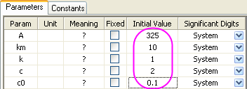
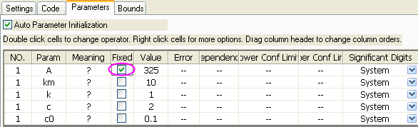

Benutzerdefinierte Anpassungsfunktion
UserDef-FitFunc
Zusammenfassung
Sie können zusätzlich zu den über 200 Standardanpassungsfunktionen auch Ihre eigenen Anpassungsfunktionen in Origin erstellen. Eine Anzahl von Origin-Hilfsmitteln unterstützen die Anpassung mit Ihren eigenen Funktionen, einschließlich:
-
App Simple Fit
-
Die App Simple Fit bietet eine viel bequemere Methode, einfache Funktionen anzupassen. Sie lässt sich mit der Form y = f(x) ausdrücken. Sie müssen nur Ihre Formel eingeben oder eine existierende Funktion auswählen, die Initialisierungswerte festlegen und können dann sofort die Anpassungsberichte erzeugen. Wie diese App funktioniert, erfahren Sie in diesem Abschnitt.
- Hinweis: Die App Simple Fit ist in der Origin-Software vorinstalliert. Sie können sie über die App-Galerie bei aktiviertem Diagrammfenster aufrufen.
-
Minitool Quick Fit
- Das Minitool Quick Fit stelle eine weitere einfache Methode zur linearen und nichtlinearen Anpassung dar, ohne den jeweiligen Dialog zu öffnen. Es sieht vielleicht ein bisschen komplizierter aus, bietet aber viele erweiterte Bedienelemente. Starten Sie einen Anpassungsprozess mit diesem Minitool. Sie müssen zunächst Ihre eigene Funktion zu der Funktionsliste hinzufügen.
-
Hilfsmittel NLFit
- Das Hilfsmittel NLFit ist ein leistungsstarker Anpassungsassistent, mit dem Sie komplexere Anpassungsfunktionen definieren und den Anpassungsprozess umfassend steuern können. Zum Anpassen einer benutzerdefinierten Funktion im Hilfsmittel NLFit müssen Sie diese zuerst im Dialog Fitfunktion erstellen erstellen.
In diesem Tutorial wird hauptsächlich erläutert, wie eine benutzerdefinierte Anpassungsfunktion im Dialog Fitfunktion erstellen erstellt und der nichtlineare Kurvenfit mit ihr ausgeführt wird. Außerdem wird erklärt, wie ein Parameter für eine Kurvenanpassung mit dem Hilfsmittel NLFit festgelegt wird.
Origin-Version mind. erforderlich: Origin 2016 SR0
Was Sie lernen werden
Dieses Tutorial zeigt Ihnen, wie Sie:
- Eine benutzerdefinierte Anpassungsfunktion erstellen
- Eine nichtlineare Kurvenanpassung mit einer benutzerdefinierten Fitfunktion durchführen.
Eine Fitfunktion erstellen und zum Durchführen einer Kurvenanpassung verwenden
Die Daten, die wir anpassen werden, befinden sich in der Datei ConcentrationCurve.dat unter <Origin-Verzeichnis>\Samples\Curve Fitting\.
Die zu erstellende Anpassungsfunktion wird unten gezeigt:
\sqrt{2,303+\frac{C}{(x-C_{0})}}")
in der
 die abhängige Variable ist
die abhängige Variable ist
 die unabhängige Variable ist
die unabhängige Variable ist
und alle Anpassungsparameter sind.
Methode 1: App Simple Fit verwenden
- Erstellen Sie eine neue Arbeitsmappe. Klicken Sie auf die Schaltfläche
 , um die Datei ConcentrationCurve.dat im Verzeichnis <Origin-Verzeichnis>\Samples\Curve Fitting\ zu importieren.
, um die Datei ConcentrationCurve.dat im Verzeichnis <Origin-Verzeichnis>\Samples\Curve Fitting\ zu importieren.
- Markieren Sie Spalte B und klicken Sie auf die Schaltfläche
 , um ein Punktdiagramm zu erzeugen.
, um ein Punktdiagramm zu erzeugen.
- Wählen Sie Analyse: Anpassen: Simple Fit, um die App Simple Fit zu öffnen. Wechseln Sie zur Registerkarte Nonlinear und geben Sie die Gleichung in das Feld y(x)= ein. Die Parametertabelle wird angezeigt. Geben Sie die Initialisierungswerte für die Parameter in sie ein.
- Wenn die Gleichung eingegeben wurde und die Parameter initialisiert und festgelegt wurden, klicken Sie auf die Schaltfläche Fit, um die Kurve mit der soeben definierten Funktion anzupassen. Natürlich können Sie den Trend der Anpassung überprüfen, indem Sie einmal auf die Schaltfläche 1 Iter. klicken.
- Sie können auf Speichern unter... klicken, um diese Funktion für die weitere Verwendung zu speichern. Klicken Sie auf Schließen, um die Anpassungsergebnisse zu überprüfen.

Methode 2: Dialog Fitfunktionen verwalten und Hilfsmittel NLFit verwenden
Schritt 1: Eine Fitfunktion mit Hilfe des Dialogs Fitfunktionen verwalten erstellen
In diesem Abschnitt wird gezeigt, wie eine benutzerdefinierte Anpassungsfunktion mit dem Hilfsmittel Fitfunktionen erstellen erstellt wird. Es gibt allerdings das alternative Hilfsmittel Fitfunktionen verwalten, das ebenfalls dazu verwendet werden kann, benutzerdefinierte Anpassungsfunktionen zu erstellen (öffnen Sie es durch Auswahl von Hilfsmittel: Fitfunktionen verwalten oder drücken Sie F9).
- Starten Sie Origin und wählen Sie Hilfsmittel: Fitfunktionen erstellen im Menü (oder drücken Sie F8), um den Dialog Fitfunktionen erstellen zu öffnen.
- Wählen Sie auf der Seite Ziel die Option Eine neue Funktion erstellen und klicken Sie auf Weiter.
- Ändern Sie auf der Seite Name und Typ die Einstellungen wie im folgenden Bild und klicken Sie dann auf Weiter:
- Geben Sie auf der Seite Variablen und Parameter die Namen für Variable und Parameter ein, wie im Bild unten zu sehen, und klicken Sie dann auf Weiter:
Verwenden Sie im Feld Parameter ein Komma (",") als Trennzeichen.
- Geben Sie auf der Seite Ausdrucksfunktion die Gleichung unten im Funktionskörper ein:
A*exp(R0*k*x-km)*sqrt(R0+c/(x-c0))
- Gehen Sie zur Registerkarte Konstante und setzen Sie den Wert von R0 auf 2,303.
- Geben Sie den Parametern geschätzte Initialisierungswerte gemäß dieser speziellen Daten und Funktion.

Hinweis: Sie können auch jedes Mal, wenn Sie die Anpassung durchführen, unterschiedliche Anfangswerte eingeben.
- Klicken Sie auf die Schaltfläche Auswerten
 , um schnell zu prüfen, ob die Funktion gültig ist (wenn sie gültig ist, wird ein tatsächlicher Wert für y wiedergegeben).
, um schnell zu prüfen, ob die Funktion gültig ist (wenn sie gültig ist, wird ein tatsächlicher Wert für y wiedergegeben).
Hinweis: Wenn Sie anfangs Origin C als Funktionstyp angegeben haben, können Sie die Funktion an dieser Stellen kompilieren, um zu prüfen, ob ein Fehler auftritt. Dies ist besonders nützlich, um die passenden Klammern zusammenzustellen.
- Klicken Sie 3x auf die Schaltfläche Weiter, bis Sie zu der Seite Abgeleitete Parameter gelangen.
- Auf dieser Seite wird der abgeleitete Parameter A0 definiert. Geben Sie seine Gleichung in das Feld Abgeleitete Parametergleichungen ein:
A0=-A*exp(km)*1E-4
- Klicken Sie auf Fertigstellen, um dieser benutzerdefinierte Anpassungsfunktion zu erstellen. Die .FDF-Datei wird in dem Anwenderdateiordner gespeichert.
 |
Sie können die benutzerdefinierte Fitfunktion später immer ändern, entweder über den Dialog Fitfunktionen erstellen (wählen Sie dazu Eine benutzerdefinierte Funktion bearbeiten auf der Seite Ziel) oder den Dialog Fitfunktionen verwalten.
|
Schritt 2: Kurvenanpassung mit dem Hilfsmittel NLFit durchführen
- Erstellen Sie eine neue Arbeitsmappe. Klicken Sie auf die Schaltfläche , um die Datei ConcentrationCurve.dat im Verzeichnis <Origin-Verzeichnis>\Samples\Curve Fitting\ zu importieren.
- Markieren Sie Spalte B und klicken Sie auf die Schaltfläche , um ein Punktdiagramm zu erzeugen.
- Lassen Sie das Diagrammfenster aktiviert und wählen Sie Analyse: Anpassen: Nichtlinearer Fit, um den Dialog NLFit aufzurufen.
- Setzen Sie auf der Seite Funktionsauswahl die Kategorie auf Benutzerdefiniert und die Funktion auf MyFitFunc(User).
- Klicken Sie auf die Schaltfläche
 , um die Datei anzupassen.
, um die Datei anzupassen.
- Eine Fehlermeldung wird auf der Registerkarte Nachrichten im unteren Bedienfeld gemeldet und weist darauf hin, dass der Fit aufgrund von Überparameterisierung nicht konvergiert.
- Die Parameter A und km besitzen eine gegenseitige Abhängigkeit, so dass das Festlegen von einem der beiden das Problem löst. Dieses Mal wird A festgelegt.
- Wechseln Sie zur Registerkarte Parameter, klicken Sie auf
 , um die Einstellung der Anfangswerte wiederherzustellen, und aktivieren Sie das Kontrollkästchen Fest des Parameters A:
, um die Einstellung der Anfangswerte wiederherzustellen, und aktivieren Sie das Kontrollkästchen Fest des Parameters A:

- Klicken Sie auf die Schaltfläche Fit, um die Anpassung durchzuführen.
- Die angepasste Kurve wird zu der ursprünglichen Datenzeichnung hinzugefügt.
- Außerdem wird ein Berichtsblatt erzeugt, in dem die angepassten Werte von allen Parametern (einschließlich des abgeleiteten Parameters A0) in der Parametertabelle aufgeführt werden:
|
Im Fall der Überparameterisierung können Sie verschiedene Parameter festlegen, um mehrere Anpassungsergebnisse zu erhalten, und dann die Anpassungsmodelle statistisch über Analyse: Anpassen: Modelle vergleichen vergleichen.
|